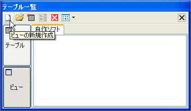
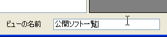
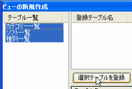
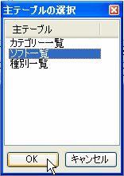
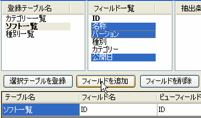

ビューの新規作成
ビューの新規作成では新たにビューの作成が可能です。既存のテーブルから必要なフィールドの抽出したり、 抽出条件を加えたり、複数のテーブルを結合したビューを作成することが可能です。
1.ビューの新規作成ウィンドウの表示
ビューの新規作成ではテーブルウィンドウのビューボタンをクリックしビュー一覧を表示してから 新規作成をクリックして｢ビューの新規作成ウィンドウ｣を表示します。
新規作成をクリックして｢ビューの新規作成ウィンドウ｣を表示します。
2.ビューの名前の入力
まず、ビューの名前を決定します。 .(ピリオド)と](半角大カッコ)は使用できません。
3.対象テーブルの選択
次にビューに含めるテーブルを選択します。
含めたいテーブルをすべて選択し、｢選択テーブルを登録｣ボタンをクリックして登録をします。
また、テーブル名をWクリックでも同様に登録が可能です。
4.主テーブルの選択
次に主テーブルを選択します。
主テーブルとはビューのキーになるテーブルのことでリレーションの設定をする場合には重要となります。
主テーブルの主キーは必ず登録されます。
5.フィールドの登録
次にビューに含むフィールドを登録します。
登録テーブル一覧のテーブル名を選択するとフィールド一覧に選択したテーブルのフィールドが表示されますので、
登録したいテーブルを選択して｢フィールドの追加｣ボタンをクリックしてください。
ここで登録したフィールドがビューのフィールドとして採用されます。